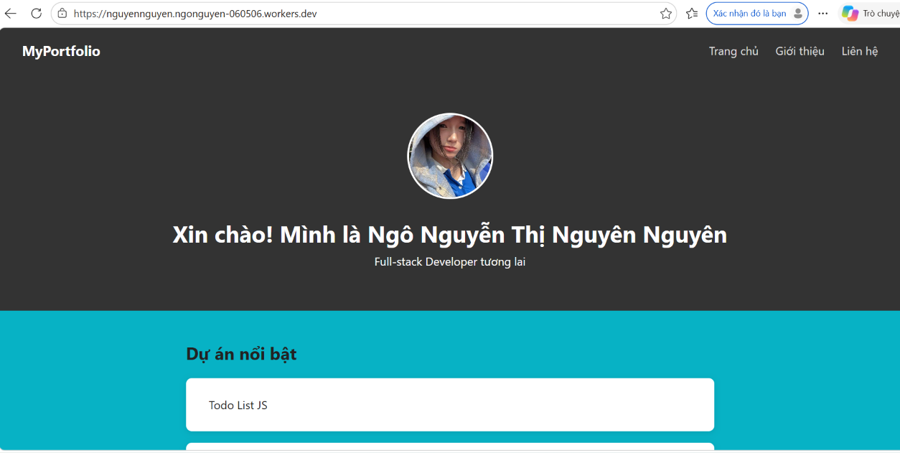
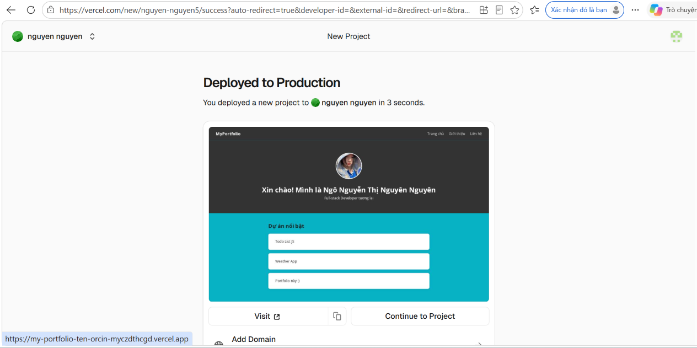
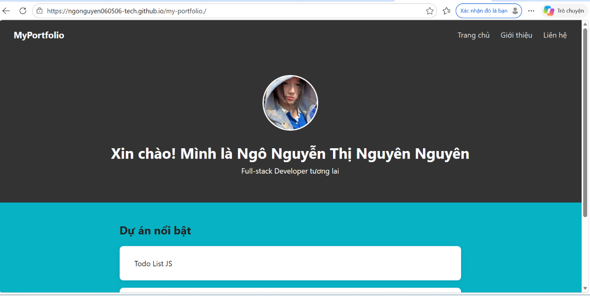
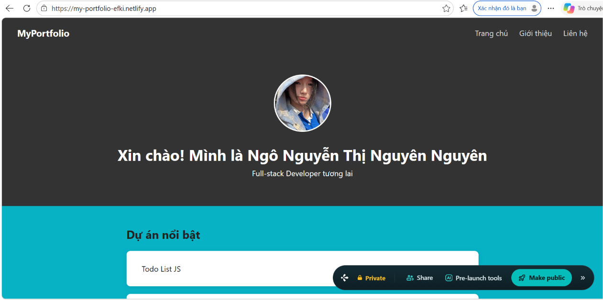

HÌNH ẢNH KẾT QUẢ BÀI TẬP 21

Mô tả: Hoàn thành giao diện và chức năng yêu cầu của Bài tập 21.

Mô tả: Hoàn thành giao diện và chức năng yêu cầu của Bài tập 21.
GitHub Pages:
https://ngonguyen060506-tech.github.io/my-portfolio./

Mô tả: Hoàn thành giao diện và chức năng yêu cầu của Bài tập 21.

Mô tả: Hoàn thành giao diện và chức năng yêu cầu của Bài tập 21.